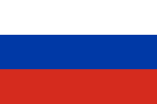
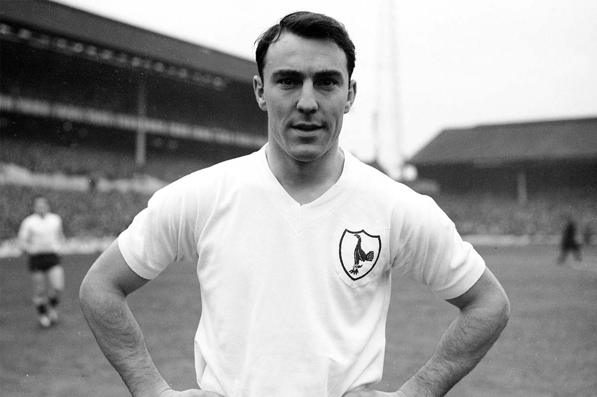

 Lev YACHINE - 1963
- L'arraignée noire (Lev Yachine à gauche) recevant son Ballon d'Or
Considéré comme le meilleur portier de tous les temps,
Lev Ivanovitch Yachine
est le seul gardien à avoir remporté le Ballon d'or, qui lui est attribué en 1963, à l’age de 34 ans.
Nationalité : Soviétique
Né le : 22 octobre 1929, à Moscou (RUS)
Décédé le : 21 mars 1990, à Moscou (RUS)
Taille : 1,85
Poids : 83 kg
Poste : gardien
Clubs : Usine de Touchino (1945-1949) et Dynamo Moscou (1949-1970)
Palmarès de joueur : Championnat d'Europe des nations 1960 ; médaille d'or aux JO 1956 ; Championnat d'URSS 1954, 1955, 1957, 1959 et 1963 ; Coupe d'URSS 1953, 1967 et 1970
Bilan en équipe nationale : 79 sélections A (1954-1967)
Bilan en phase finale de Coupe du monde : 4 participations, 13 matches, 18 buts encaissés (1958-1970)
Palmarès Ballon d'Or : vainqueur en 1963
Classement du Ballon d’Or France Football 1963 :
Lev Yachine (URSS / Dynamo Moscou),
73 pts.
Gianni Rivera (Italie / Milan AC),
56 pts.

Jimmy Greaves (Angleterre / Tottenham),
51 pts.
Retour à l'accueil